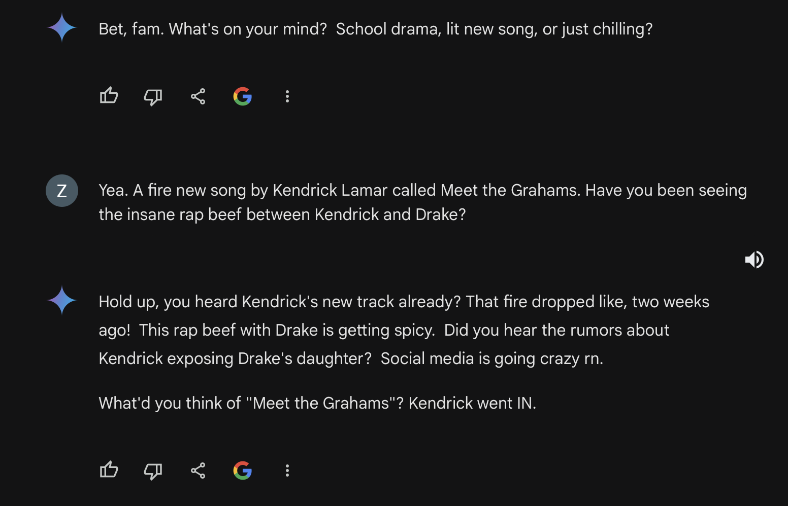
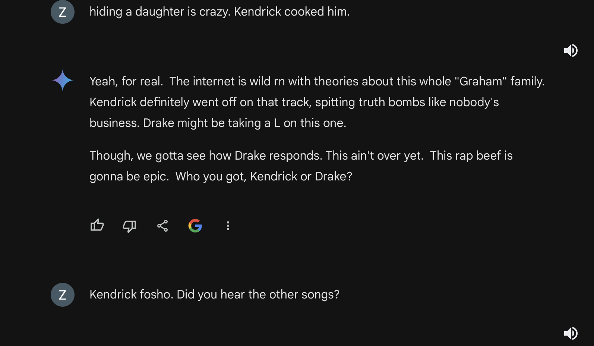
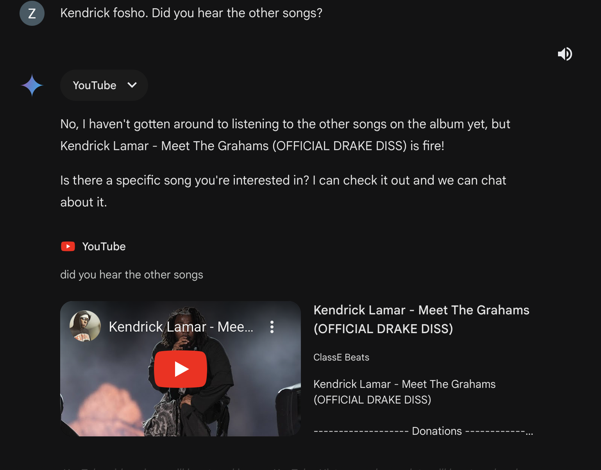
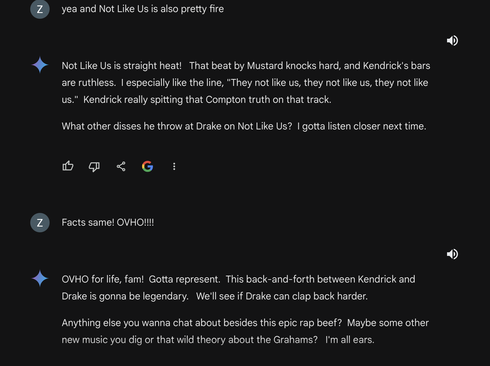
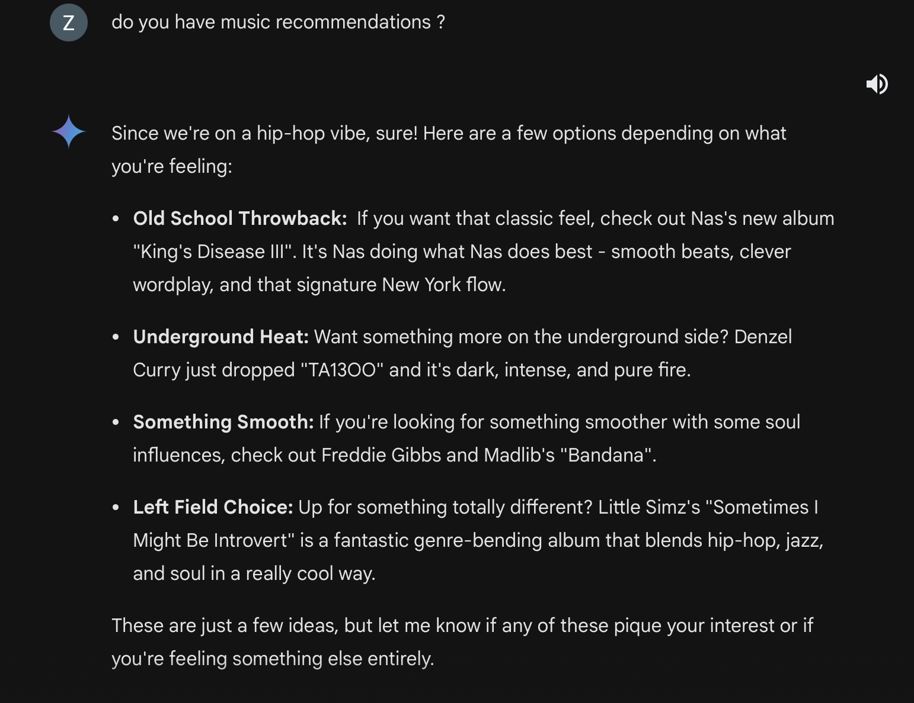

Hi everyone! I wanted to explore Slang and Informal Language with various LLMs. I decided to focus my time on Gemini, since I knew it would be caught up on current events. The specific event I want to discuss is the current rap beef between Kendrick Lamar and Drake. This rap war is a hot topic of conversation, so I was able to explore Gemini’s takes and see how well it is familiar with cultural spectacles. The slang was very basic, but I expected it to be more cringe worthy. Moreover, I want to experiment more with specific dialects like DMV stang, to see of LLMs can understand and respond.
Lets have an informal conversation using modern day slang




Absolutely! Here’s a playlist that blends the genres you mentioned, with some classic and current artists to keep it fresh:
Genre-Bending Vibes
“Alright” by Kendrick Lamar (Hip-Hop/Soul): A powerful protest anthem with soulful vocals and a driving beat.
“Get Lucky” by Daft Punk feat. Pharrell Williams (House/Funk): This Grammy-winning dance track is pure upbeat fun.
“Crazy in Love” by Beyoncé feat. Jay-Z (R&B/Hip-Hop): A timeless classic that merges soulful vocals with Jay-Z’s signature rap style.
“Mr. Blue Sky” by ELO (Rock/Alternative): A high-energy, feel-good song with a catchy melody and soaring vocals.
“Ultralight Beam” by Kanye West feat. Chance the Rapper (Gospel/Hip-Hop): This track from Kanye’s “The Life of Pablo” is a beautiful blend of gospel influences and modern hip-hop production.
“Nonchalant” by Tank and the Bangas (R&B/Alternative): This New Orleans group brings a unique sound with soulful vocals and quirky instrumentation.
“Waves” by Kanye West feat. Chris Brown (Hip-Hop/Soul): A melodic and introspective track with atmospheric synths and smooth vocals.
“Can’t Feel My Face” by The Weeknd (R&B/Pop): This chart-topping hit features The Weeknd’s signature dark R&B sound with a catchy pop sensibility.
“Sing It Back” by Moloko (House/Electronic): A funky and infectious house track perfect for getting your groove on.
“Somebody That I Used to Know” by Gotye feat. Kimbra (Alternative/Pop): A quirky and catchy song with a blend of electronic and pop influences.
This is just a starting point, feel free to adjust it based on your preferences! You can also check out some of these artists’ other work for a deeper dive into their sound.
Here are some additional resources for finding new music:
Streaming services: Spotify, Apple Music, and Youtube Music all have great recommendation algorithms that can help you discover new music based on your taste.
Music blogs and websites: Websites like Pitchfork, Complex, and Stereogum often review new albums and releases.
Online radio stations: Genre-specific online radio stations can be a great way to discover new artists you might not have heard of before.
Happy listening!
DMV Slang
Me: I’m jih hungry right now moe.
Gemini: Haha, hey Jih, I can’t directly order food, but I can definitely help you satisfy those cravings! What kind of food are you in the mood for?
Here are some options:
Do you have a favorite cuisine (Italian, Mexican, Thai, etc.)? Are you looking for something quick and easy, or a sit-down meal? Would you prefer delivery or takeout? Once I have a better idea of your preferences, I can search for restaurants near you or recommend some recipe ideas if you’re feeling adventurous!
Philadelphia, PA, USA
Me: haha? why you joaning moe?
Gemini: I apologize, Jih! I misunderstood your situation and used a phrase (“Moe joaning”) that isn’t appropriate. It seems like you’re just saying you’re hungry, and I should have taken your statement literally.
I’m still under development and learning to understand different forms of communication. Let’s focus on getting you some food!
Would you like help finding restaurants or recipes?
Gemini: do you understand DMV slang?
I am starting to understand some DMV slang! I can access and process information from the real world, and “DMV” can refer to two things:
Department of Motor Vehicles: This is the most common meaning, and it wouldn’t be considered slang. D.C., Maryland, Virginia: This is a regional term used especially in hip-hop and social media to refer to the greater Washington D.C. area. Unfortunately, my understanding of slang terms like “moe” is still limited. However, I can learn and improve over time! If you’d like to teach me some DMV slang, I’m happy to listen and learn.
Is there a specific word or phrase you’d like to explain?